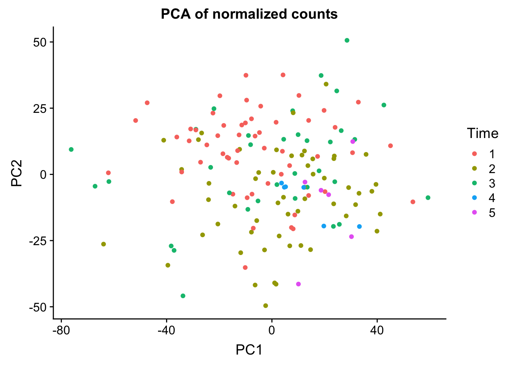
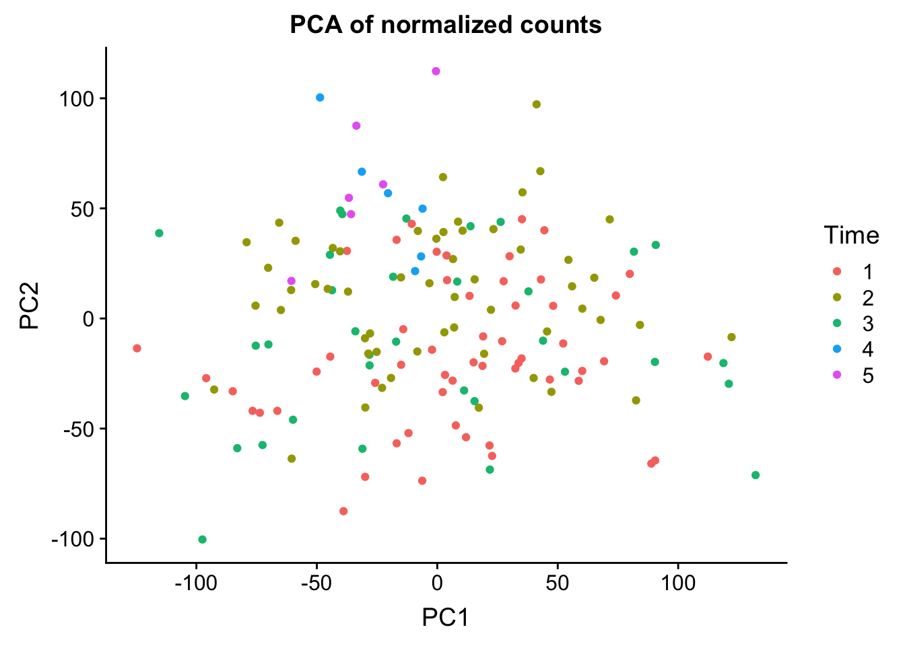
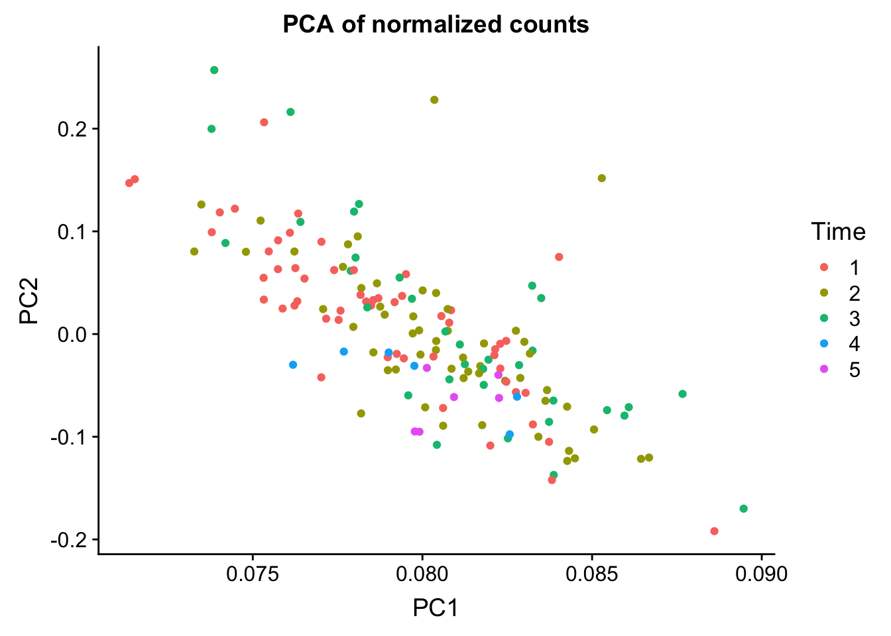

PCA_vst
Lauren Blake
July 23, 2018
Last updated: 2018-08-28
workflowr checks: (Click a bullet for more information)-
✖ R Markdown file: uncommitted changes
The R Markdown is untracked by Git. To know which version of the R Markdown file created these results, you’ll want to first commit it to the Git repo. If you’re still working on the analysis, you can ignore this warning. When you’re finished, you can runwflow_publishto commit the R Markdown file and build the HTML. -
✔ Environment: empty
Great job! The global environment was empty. Objects defined in the global environment can affect the analysis in your R Markdown file in unknown ways. For reproduciblity it’s best to always run the code in an empty environment.
-
✔ Seed:
set.seed(12345)The command
set.seed(12345)was run prior to running the code in the R Markdown file. Setting a seed ensures that any results that rely on randomness, e.g. subsampling or permutations, are reproducible. -
✔ Session information: recorded
Great job! Recording the operating system, R version, and package versions is critical for reproducibility.
-
Great! You are using Git for version control. Tracking code development and connecting the code version to the results is critical for reproducibility. The version displayed above was the version of the Git repository at the time these results were generated.✔ Repository version: 241c630
Note that you need to be careful to ensure that all relevant files for the analysis have been committed to Git prior to generating the results (you can usewflow_publishorwflow_git_commit). workflowr only checks the R Markdown file, but you know if there are other scripts or data files that it depends on. Below is the status of the Git repository when the results were generated:
Note that any generated files, e.g. HTML, png, CSS, etc., are not included in this status report because it is ok for generated content to have uncommitted changes.Ignored files: Ignored: .DS_Store Ignored: analysis/.DS_Store Ignored: data/.DS_Store Ignored: data/aux_info/ Ignored: data/hg_38/ Ignored: data/libParams/ Ignored: output/.DS_Store Untracked files: Untracked: _workflowr.yml Untracked: analysis/Collection_dates.Rmd Untracked: analysis/Converting_IDs.Rmd Untracked: analysis/Global_variation.Rmd Untracked: analysis/Preliminary_clinical_covariate.Rmd Untracked: analysis/VennDiagram2018-07-24_06-55-46.log Untracked: analysis/VennDiagram2018-07-24_06-56-13.log Untracked: analysis/VennDiagram2018-07-24_06-56-50.log Untracked: analysis/VennDiagram2018-07-24_06-58-41.log Untracked: analysis/VennDiagram2018-07-24_07-00-07.log Untracked: analysis/VennDiagram2018-07-24_07-00-42.log Untracked: analysis/VennDiagram2018-07-24_07-01-08.log Untracked: analysis/VennDiagram2018-08-17_15-13-24.log Untracked: analysis/VennDiagram2018-08-17_15-13-30.log Untracked: analysis/VennDiagram2018-08-17_15-15-06.log Untracked: analysis/VennDiagram2018-08-17_15-16-01.log Untracked: analysis/VennDiagram2018-08-17_15-17-51.log Untracked: analysis/VennDiagram2018-08-17_15-18-42.log Untracked: analysis/VennDiagram2018-08-17_15-19-21.log Untracked: analysis/VennDiagram2018-08-20_09-07-57.log Untracked: analysis/VennDiagram2018-08-20_09-08-37.log Untracked: analysis/VennDiagram2018-08-26_19-54-03.log Untracked: analysis/VennDiagram2018-08-26_20-47-08.log Untracked: analysis/VennDiagram2018-08-26_20-49-49.log Untracked: analysis/VennDiagram2018-08-27_00-04-36.log Untracked: analysis/VennDiagram2018-08-27_00-09-27.log Untracked: analysis/VennDiagram2018-08-27_00-13-57.log Untracked: analysis/VennDiagram2018-08-27_00-16-32.log Untracked: analysis/VennDiagram2018-08-27_10-00-25.log Untracked: analysis/VennDiagram2018-08-28_06-03-13.log Untracked: analysis/VennDiagram2018-08-28_06-03-14.log Untracked: analysis/VennDiagram2018-08-28_06-05-50.log Untracked: analysis/VennDiagram2018-08-28_06-06-58.log Untracked: analysis/VennDiagram2018-08-28_06-10-12.log Untracked: analysis/VennDiagram2018-08-28_06-10-13.log Untracked: analysis/VennDiagram2018-08-28_06-18-29.log Untracked: analysis/VennDiagram2018-08-28_07-22-26.log Untracked: analysis/VennDiagram2018-08-28_07-22-27.log Untracked: analysis/background_dds_david.csv Untracked: analysis/correlations_bet_covariates.Rmd Untracked: analysis/correlations_over_time.Rmd Untracked: analysis/genocode_annotation_info.Rmd Untracked: analysis/genotypes.Rmd Untracked: analysis/import_transcript_level_estimates.Rmd Untracked: analysis/test_dds_david.csv Untracked: analysis/variables_by_time.Rmd Untracked: analysis/voom_limma.Rmd Untracked: analysis/voom_limma_hg37.Rmd Untracked: analysis/voom_limma_weight_change.Rmd Untracked: data/BAN2 Dates_T1_T2.xlsx Untracked: data/BAN_DATES.csv Untracked: data/BAN_DATES.xlsx Untracked: data/BAN_DATES_txt.csv Untracked: data/Ban_geno.csv Untracked: data/Ban_geno.xlsx Untracked: data/Blood_dates.txt Untracked: data/DAVID_background.txt Untracked: data/DAVID_list_T1T2.txt Untracked: data/DAVID_list_T1T2_weight.txt Untracked: data/DAVID_list_T2T3.txt Untracked: data/DAVID_list_T2T3_weight.txt Untracked: data/DAVID_results/ Untracked: data/DAVID_top100_list_T1T2.txt Untracked: data/DAVID_top100_list_T1T2_weight.txt Untracked: data/DAVID_top100_list_T2T3.txt Untracked: data/DAVID_top100_list_T2T3_weight.txt Untracked: data/Eigengenes/ Untracked: data/FemaleWeightRestoration-01-dataInput.RData Untracked: data/FemaleWeightRestoration-resid-01-dataInput.RData Untracked: data/FemaleWeightRestoration-resid-T1T2-01-dataInput.RData Untracked: data/HTSF_IDs.sav Untracked: data/Homo_sapiens.GRCh38.v22_table.txt Untracked: data/Labels.csv Untracked: data/Labels.xlsx Untracked: data/RIN.xlsx Untracked: data/RIN_over_time.csv Untracked: data/RIN_over_time.xlsx Untracked: data/T0_consolid.csv Untracked: data/T0_consolid.xlsx Untracked: data/age_t1.txt Untracked: data/birthday_age.csv Untracked: data/birthday_age.xlsx Untracked: data/clinical_sample_info_geno.csv Untracked: data/cmd_info.json Untracked: data/counts_hg37_gc_txsalmon.RData Untracked: data/counts_hg38_gc.RData Untracked: data/counts_hg38_gc_dds.RData Untracked: data/counts_hg38_gc_txsalmon.RData Untracked: data/covar_lm.csv Untracked: data/covar_lm_missing.csv Untracked: data/eigengenes_T1_T2_cov_adj_exp_5_modules.txt Untracked: data/eigengenes_T1_T2_module_background.txt Untracked: data/eigengenes_adj_exp_7_modules.txt Untracked: data/eigengenes_cov_adj_exp_14_modules.txt Untracked: data/eigengenes_module_background.txt Untracked: data/eigengenes_unadj_exp_10_modules.txt Untracked: data/eigengenes_unadj_exp_6_modules.txt Untracked: data/eigengenes_unadj_exp_9_modules.txt Untracked: data/files_list.txt Untracked: data/final_covariates.csv Untracked: data/gene_exp_values_2202.txt Untracked: data/gene_exp_values_2209.txt Untracked: data/gene_exp_values_2218.txt Untracked: data/gene_exp_values_2220.txt Untracked: data/gene_exp_values_2226.txt Untracked: data/gene_exp_values_2228.txt Untracked: data/gene_expression_filtered_T1T5.csv Untracked: data/gene_names_58387.txt Untracked: data/gene_to_tran.txt Untracked: data/lm_covar_fixed_random.csv Untracked: data/lm_covar_fixed_random_geno.csv Untracked: data/logs/ Untracked: data/module_T1T2_cov_adj_blue.txt Untracked: data/module_T1T2_cov_adj_brown.txt Untracked: data/module_T1T2_cov_adj_turquoise.txt Untracked: data/module_T1T2_cov_adj_yellow.txt Untracked: data/module_adj_cov_merged_blue.txt Untracked: data/module_adj_cov_merged_brown.txt Untracked: data/module_adj_cov_merged_cyan.txt Untracked: data/module_adj_cov_merged_green.txt Untracked: data/module_adj_cov_merged_greenyellow.txt Untracked: data/module_adj_cov_merged_magenta.txt Untracked: data/module_adj_cov_merged_red.txt Untracked: data/module_adj_cov_merged_salmon.txt Untracked: data/module_adj_cov_merged_tan.txt Untracked: data/module_adj_cov_merged_yellow.txt Untracked: data/module_black.txt Untracked: data/module_blue.txt Untracked: data/module_brown.txt Untracked: data/module_cov_adj_black.txt Untracked: data/module_cov_adj_blue.txt Untracked: data/module_cov_adj_brown.txt Untracked: data/module_cov_adj_cyan.txt Untracked: data/module_cov_adj_green.txt Untracked: data/module_cov_adj_greenyellow.txt Untracked: data/module_cov_adj_magenta.txt Untracked: data/module_cov_adj_pink.txt Untracked: data/module_cov_adj_purple.txt Untracked: data/module_cov_adj_red.txt Untracked: data/module_cov_adj_salmon.txt Untracked: data/module_cov_adj_tan.txt Untracked: data/module_cov_adj_turquoise.txt Untracked: data/module_cov_adj_yellow.txt Untracked: data/module_cyan.txt Untracked: data/module_green.txt Untracked: data/module_greenyellow.txt Untracked: data/module_magenta.txt Untracked: data/module_merged_black.txt Untracked: data/module_merged_blue.txt Untracked: data/module_merged_brown.txt Untracked: data/module_merged_cyan.txt Untracked: data/module_merged_green.txt Untracked: data/module_merged_greenyellow.txt Untracked: data/module_merged_magenta.txt Untracked: data/module_merged_pink.txt Untracked: data/module_merged_purple.txt Untracked: data/module_merged_red.txt Untracked: data/module_merged_salmon.txt Untracked: data/module_merged_tan.txt Untracked: data/module_merged_turquoise.txt Untracked: data/module_merged_yellow.txt Untracked: data/module_pink.txt Untracked: data/module_purple.txt Untracked: data/module_red.txt Untracked: data/module_salmon.txt Untracked: data/module_tan.txt Untracked: data/module_turquoise.txt Untracked: data/module_yellow.txt Untracked: data/notimecovariates.csv Untracked: data/only_individuals_biomarkers_weight_restoration_study.xlsx Untracked: data/pcs_genes.csv Untracked: data/pcs_genes.txt Untracked: data/rest1t2_BI_hg37.rds Untracked: data/rest1t2_BI_hg38.rds Untracked: data/rest1t2_hg37.rds Untracked: data/rest1t2_psych_meds_BMI_hg37.rds Untracked: data/rest1t2_psych_meds_hg37.rds Untracked: data/rest2t3_BI_hg37.rds Untracked: data/rest2t3_BI_hg38.rds Untracked: data/rest2t3_hg37.rds Untracked: data/rest2t3_psych_meds_BMI_hg37.rds Untracked: data/rest2t3_psych_meds_hg37.rds Untracked: data/salmon_gene_matrix_bak_reorder_time.txt Untracked: data/technical_sample_info.csv Untracked: data/tx_to_gene.txt Untracked: data/tx_to_gene_37.txt Untracked: data/usa2.pcawithref.menv.mds_cov Untracked: data/vsd_values_hg38_gc.rds Untracked: data/~$Labels.xlsx Untracked: data/~$T0_consolid.xlsx Untracked: docs/VennDiagram2018-07-24_06-55-46.log Untracked: docs/VennDiagram2018-07-24_06-56-13.log Untracked: docs/VennDiagram2018-07-24_06-56-50.log Untracked: docs/VennDiagram2018-07-24_06-58-41.log Untracked: docs/VennDiagram2018-07-24_07-00-07.log Untracked: docs/VennDiagram2018-07-24_07-00-42.log Untracked: docs/VennDiagram2018-07-24_07-01-08.log Untracked: docs/figure/ Unstaged changes: Modified: analysis/_site.yml Modified: analysis/about.Rmd Deleted: analysis/chunks.R Modified: analysis/index.Rmd Modified: analysis/license.Rmd
Introduction
The goal of this script is to identify the major drivers of gene expression level variation in the data.
library(DESeq2)Loading required package: S4VectorsLoading required package: stats4Loading required package: BiocGenericsLoading required package: parallel
Attaching package: 'BiocGenerics'The following objects are masked from 'package:parallel':
clusterApply, clusterApplyLB, clusterCall, clusterEvalQ,
clusterExport, clusterMap, parApply, parCapply, parLapply,
parLapplyLB, parRapply, parSapply, parSapplyLBThe following objects are masked from 'package:stats':
IQR, mad, sd, var, xtabsThe following objects are masked from 'package:base':
anyDuplicated, append, as.data.frame, cbind, colMeans,
colnames, colSums, do.call, duplicated, eval, evalq, Filter,
Find, get, grep, grepl, intersect, is.unsorted, lapply,
lengths, Map, mapply, match, mget, order, paste, pmax,
pmax.int, pmin, pmin.int, Position, rank, rbind, Reduce,
rowMeans, rownames, rowSums, sapply, setdiff, sort, table,
tapply, union, unique, unsplit, which, which.max, which.min
Attaching package: 'S4Vectors'The following object is masked from 'package:base':
expand.gridLoading required package: IRangesLoading required package: GenomicRangesLoading required package: GenomeInfoDbLoading required package: SummarizedExperimentLoading required package: BiobaseWelcome to Bioconductor
Vignettes contain introductory material; view with
'browseVignettes()'. To cite Bioconductor, see
'citation("Biobase")', and for packages 'citation("pkgname")'.Loading required package: DelayedArrayLoading required package: matrixStats
Attaching package: 'matrixStats'The following objects are masked from 'package:Biobase':
anyMissing, rowMedians
Attaching package: 'DelayedArray'The following objects are masked from 'package:matrixStats':
colMaxs, colMins, colRanges, rowMaxs, rowMins, rowRangesThe following object is masked from 'package:base':
applylibrary("pheatmap")Warning: package 'pheatmap' was built under R version 3.4.4library("gplots")
Attaching package: 'gplots'The following object is masked from 'package:IRanges':
spaceThe following object is masked from 'package:S4Vectors':
spaceThe following object is masked from 'package:stats':
lowesslibrary("RColorBrewer")
library("ggplot2")Warning: package 'ggplot2' was built under R version 3.4.4library("cowplot")Warning: package 'cowplot' was built under R version 3.4.4
Attaching package: 'cowplot'The following object is masked from 'package:ggplot2':
ggsave# Read in the filtered data (file made from the end of voom_limma.Rmd)
init_pc <- read.csv("../data/gene_expression_filtered_T1T5.csv")
dim(init_pc)[1] 11504 157init_pc <- init_pc[,2:157]
labels <- read.csv("../data/lm_covar_fixed_random.csv")
labels_123 <- as.data.frame(paste(labels$Individual, labels$Time, sep = "_"))
colnames(labels_123) <- c("ID_time")PCA on all data (vst transformed from DESEq2)
vst <- readRDS("../data/vsd_values_hg38_gc.rds")
# Run PCA on the normalized data
pca_genes <- prcomp(t(vst), center = TRUE)
matrixpca <- pca_genes$x
PC1 <- matrixpca[,1]
PC2 <- matrixpca[,2]
pc3 <- matrixpca[,3]
pc4 <- matrixpca[,4]
pc5 <- matrixpca[,5]
matrixpca <- as.data.frame(matrixpca)
summary <- summary(pca_genes)
head(summary$importance[2,1:5]) PC1 PC2 PC3 PC4 PC5
0.12229 0.07022 0.05801 0.05184 0.03742 norm_count <- ggplot(data=matrixpca, aes(x=PC1, y=PC2, color=as.factor(labels$Time))) + geom_point(aes(colour = as.factor(labels$Time))) + ggtitle("PCA of normalized counts") + scale_color_discrete(name = "Time")
plot_grid(norm_count)
PCA on filtered data
# Load gene expression data from all 156 samples
normalized_data <- read.csv("../data/gene_expression_filtered_T1T5.csv")
# Run PCA on the normalized data
pca_genes <- prcomp(t(normalized_data[,2:157]), scale = TRUE, center = TRUE)
matrixpca <- pca_genes$x
PC1 <- matrixpca[,1]
PC2 <- matrixpca[,2]
pc3 <- matrixpca[,3]
pc4 <- matrixpca[,4]
pc5 <- matrixpca[,5]
matrixpca <- as.data.frame(matrixpca)
summary <- summary(pca_genes)
head(summary$importance[2,1:5]) PC1 PC2 PC3 PC4 PC5
0.23496 0.13460 0.09950 0.05124 0.03724 norm_count <- ggplot(data=matrixpca, aes(x=PC1, y=PC2, color=as.factor(labels$Time))) + geom_point(aes(colour = as.factor(labels$Time))) + ggtitle("PCA of normalized counts") + scale_color_discrete(name = "Time")
plot_grid(norm_count)
PCA on scaled data
# Add Bioinformatics step of scaling each gene
# centering with 'scale()'
center_scale <- function(x) {
scale(x, scale = TRUE)
}
# apply it
centered_init_pc <- center_scale(init_pc)
check <- cor(init_pc)
cx <- sweep(check, 2, colMeans(check), "-")
pca_genes <- prcomp(check, center = TRUE, scale = FALSE)
matrixpca <- pca_genes$x
PC1 <- matrixpca[,1]
PC2 <- matrixpca[,2]
pc3 <- matrixpca[,3]
pc4 <- matrixpca[,4]
pc5 <- matrixpca[,5]
matrixpca <- as.data.frame(matrixpca)
summary <- summary(pca_genes)
head(summary$importance[2,1:5]) PC1 PC2 PC3 PC4 PC5
0.65175 0.18426 0.07038 0.03644 0.01884 norm_count <- ggplot(data=matrixpca, aes(x=PC1, y=PC2, color=as.factor(labels$Time))) + geom_point(aes(colour = as.factor(labels$Time))) + ggtitle("PCA of normalized counts") + scale_color_discrete(name = "Time")
plot_grid(norm_count)
PCA on normalized, filtered data- use loadings only
pca_genes <- prcomp(init_pc, center = TRUE, scale = FALSE)
pca_rot <- as.data.frame(pca_genes$rotation)
pca_rot[,1] <- as.numeric(pca_rot[,1])
pca_rot[,2] <- as.numeric(pca_rot[,2])
norm_count <- ggplot(data=pca_rot, aes(x=PC1, y=PC2, color=as.factor(labels$Time))) + geom_point(aes(colour = as.factor(labels$Time))) + ggtitle("PCA of normalized counts") + scale_color_discrete(name = "Time")
plot_grid(norm_count)
SVD on filtered data
# Run PCA
X = t(scale(t(init_pc),center=TRUE,scale=FALSE))
sv = svd(t(X))
U = sv$u
V = sv$v
D = sv$d
## in R calculate the rank of a matrix is by
#qr(t(X))$rank
plot(U[,1],U[,2],xlab="PC1",ylab="PC2")
U <- as.data.frame(U)
norm_count <- ggplot(data=U, aes(x=U[,1], y=U[,2], color=labels$Time)) + geom_point(aes(colour = as.factor(labels$Time))) + ggtitle("PCA of normalized counts") + scale_color_discrete(name = "Time") + xlab("PC1") + ylab("PC2")
plot_grid(norm_count)
#save_plot("/Users/laurenblake/Dropbox/Lauren Blake/Figures/PCA_time_August10.png", norm_count,
# base_aspect_ratio = 1)
# Variance explained
varex = 0
cumvar = 0
denom = sum(D^2)
for(i in 1:64){
varex[i] = D[i]^2/denom
cumvar[i] = sum(D[1:i]^2)/denom
}
## variance explained by each PC cumulatively
varex [1] 0.191251884 0.101480941 0.076890551 0.056966384 0.047740308
[6] 0.028534255 0.024038043 0.022025028 0.021309608 0.017922737
[11] 0.016249126 0.015280302 0.013255328 0.012700219 0.011990477
[16] 0.010997071 0.010762881 0.009782479 0.009333403 0.008706081
[21] 0.008313230 0.008213857 0.007578975 0.007354793 0.007018724
[26] 0.006604362 0.006492543 0.006201593 0.005842621 0.005607058
[31] 0.005434460 0.005379485 0.005218961 0.004967081 0.004903652
[36] 0.004583266 0.004531455 0.004453111 0.004248581 0.004233394
[41] 0.004162922 0.003957800 0.003902488 0.003785255 0.003691630
[46] 0.003594334 0.003489787 0.003408952 0.003371267 0.003297509
[51] 0.003219381 0.003093576 0.003056514 0.002994842 0.002942849
[56] 0.002890365 0.002825417 0.002793333 0.002717778 0.002548626
[61] 0.002523417 0.002504802 0.002406615 0.002389410cumvar [1] 0.1912519 0.2927328 0.3696234 0.4265898 0.4743301 0.5028643 0.5269024
[8] 0.5489274 0.5702370 0.5881597 0.6044089 0.6196892 0.6329445 0.6456447
[15] 0.6576352 0.6686323 0.6793951 0.6891776 0.6985110 0.7072171 0.7155303
[22] 0.7237442 0.7313232 0.7386780 0.7456967 0.7523010 0.7587936 0.7649952
[29] 0.7708378 0.7764449 0.7818793 0.7872588 0.7924778 0.7974449 0.8023485
[36] 0.8069318 0.8114632 0.8159163 0.8201649 0.8243983 0.8285612 0.8325190
[43] 0.8364215 0.8402068 0.8438984 0.8474927 0.8509825 0.8543915 0.8577627
[50] 0.8610603 0.8642796 0.8673732 0.8704297 0.8734246 0.8763674 0.8792578
[57] 0.8820832 0.8848765 0.8875943 0.8901429 0.8926664 0.8951712 0.8975778
[64] 0.8999672Session information
sessionInfo()R version 3.4.3 (2017-11-30)
Platform: x86_64-apple-darwin15.6.0 (64-bit)
Running under: OS X El Capitan 10.11.6
Matrix products: default
BLAS: /Library/Frameworks/R.framework/Versions/3.4/Resources/lib/libRblas.0.dylib
LAPACK: /Library/Frameworks/R.framework/Versions/3.4/Resources/lib/libRlapack.dylib
locale:
[1] en_US.UTF-8/en_US.UTF-8/en_US.UTF-8/C/en_US.UTF-8/en_US.UTF-8
attached base packages:
[1] parallel stats4 stats graphics grDevices utils datasets
[8] methods base
other attached packages:
[1] cowplot_0.9.3 ggplot2_3.0.0
[3] RColorBrewer_1.1-2 gplots_3.0.1
[5] pheatmap_1.0.10 DESeq2_1.18.1
[7] SummarizedExperiment_1.8.1 DelayedArray_0.4.1
[9] matrixStats_0.54.0 Biobase_2.38.0
[11] GenomicRanges_1.30.3 GenomeInfoDb_1.14.0
[13] IRanges_2.12.0 S4Vectors_0.16.0
[15] BiocGenerics_0.24.0
loaded via a namespace (and not attached):
[1] bitops_1.0-6 bit64_0.9-7 rprojroot_1.3-2
[4] tools_3.4.3 backports_1.1.2 R6_2.2.2
[7] rpart_4.1-13 KernSmooth_2.23-15 Hmisc_4.1-1
[10] DBI_1.0.0 lazyeval_0.2.1 colorspace_1.3-2
[13] nnet_7.3-12 withr_2.1.2 tidyselect_0.2.4
[16] gridExtra_2.3 bit_1.1-14 compiler_3.4.3
[19] git2r_0.23.0 htmlTable_1.12 labeling_0.3
[22] caTools_1.17.1.1 scales_1.0.0 checkmate_1.8.5
[25] genefilter_1.60.0 stringr_1.3.1 digest_0.6.16
[28] foreign_0.8-71 rmarkdown_1.10 R.utils_2.6.0
[31] XVector_0.18.0 base64enc_0.1-3 pkgconfig_2.0.2
[34] htmltools_0.3.6 htmlwidgets_1.2 rlang_0.2.2
[37] rstudioapi_0.7 RSQLite_2.1.1 bindr_0.1.1
[40] BiocParallel_1.12.0 gtools_3.8.1 acepack_1.4.1
[43] dplyr_0.7.6 R.oo_1.22.0 RCurl_1.95-4.11
[46] magrittr_1.5 GenomeInfoDbData_1.0.0 Formula_1.2-3
[49] Matrix_1.2-14 Rcpp_0.12.18 munsell_0.5.0
[52] R.methodsS3_1.7.1 stringi_1.2.4 whisker_0.3-2
[55] yaml_2.2.0 zlibbioc_1.24.0 plyr_1.8.4
[58] grid_3.4.3 blob_1.1.1 gdata_2.18.0
[61] crayon_1.3.4 lattice_0.20-35 splines_3.4.3
[64] annotate_1.56.2 locfit_1.5-9.1 knitr_1.20
[67] pillar_1.3.0 geneplotter_1.56.0 XML_3.98-1.16
[70] glue_1.3.0 evaluate_0.11 latticeExtra_0.6-28
[73] data.table_1.11.4 gtable_0.2.0 purrr_0.2.5
[76] assertthat_0.2.0 xtable_1.8-2 survival_2.42-6
[79] tibble_1.4.2 AnnotationDbi_1.40.0 memoise_1.1.0
[82] workflowr_1.1.1 bindrcpp_0.2.2 cluster_2.0.7-1
This reproducible R Markdown analysis was created with workflowr 1.1.1